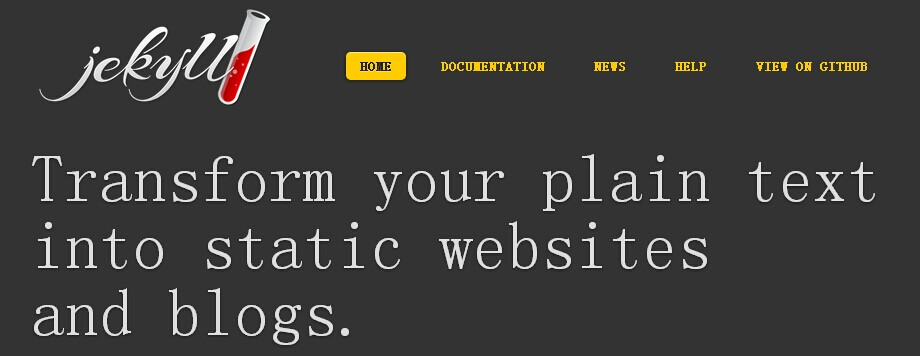

。后续的文章里将会给大家介绍网站如何与GitHub“相识”，以及“相知”。还有就是作者平时的一些经验，经验恐怕谈不上，应该是一些小tips，嘻嘻。。。。小伙伴们喜欢的话下面留个言吧！你可以吐槽，但是请不要吐我一身。。。
。后续的文章里将会给大家介绍网站如何与GitHub“相识”，以及“相知”。还有就是作者平时的一些经验，经验恐怕谈不上，应该是一些小tips，嘻嘻。。。。小伙伴们喜欢的话下面留个言吧！你可以吐槽，但是请不要吐我一身。。。以前想要做一个自己的网站，首先你得去域名商购买一个自己中意的域名以及稳定的空间或者主机。作者以前也是这样干的，虽然话费的money不是很多，不过到期了你还得去续费，万一什么时候忘记了，主机商把你的。。。。（此处省略某某个字，反正大家都懂的- -。。）
在我们开始之前，首先你得先去GitHub(http://www.github.com)上注册一个自己的账号。然后确保你电脑里面安装了Git,或者Webstorm,Sublime(很多编辑器都有对Git的一个操作支持，默认的没有，这里需要自己去下载插件哦)。

Jekyll 是一个静态站点生成器，它会根据网页源码生成静态文件。它提供了模板、变量、插件等功能，所以实际上可以用来编写整个网站。我们这里呢就是用到了它。实现的步骤就是我们现在本地编写符合Jekyll规范的网站源码，然后上传到github，由github生成并托管整个网站。当然它会是你所想要的，Free!and无限流量
但是东西都有两面性，好的同时我们也应该看见不足的一面。正如你所看到本文章下面的评论功能，这里作者使用了Disqus，因为Jekyll是静态的，你想添加动态功能就只有使用外部的服务。当然了它也没有数据库！这里就已经决定了它只能用于个人博客这类的网站，大数据网站它实在扛不起啊！！！
我们首先要在自己的电脑上创建一个目录。后面我都是使用的Git命令行工具，当然你也可以直接打开GitHub浏览器，使用图形化界面创建。
网站现在出搭建，有许多技术作者还不是很清楚，但是作者努力学习中。后续的文章里将会给大家介绍网站如何与GitHub“相识”，以及“相知”。还有就是作者平时的一些经验，经验恐怕谈不上，应该是一些小tips，嘻嘻。。。。小伙伴们喜欢的话下面留个言吧！你可以吐槽，但是请不要吐我一身。。。
{{ page.date | date_to_string }}